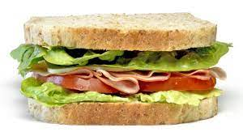

Sandwich

Description
Easy yet delicious meal to make in under 5 minutes! You can never go wrong with a sandwich. Try them with ham, cheese, PB&J or any other ingredient of your choice.
Ingredients:
- 2 slices of bread (white or whole-wheat, depending on your preference)
- For a salty sandwich: mayo, mustard and any ingredient of your choice
- For a sweet sandwich: any sweet ingredient of your choice, such as: nutella, peanut butter, jelly, condensed milk, etc.
Steps:
- Toast the bread in a pan or toaster (optional)
- Add chosen ingredients to first slice of bread.
- Put second slice of bread on top of ingredients.
- Enjoy!